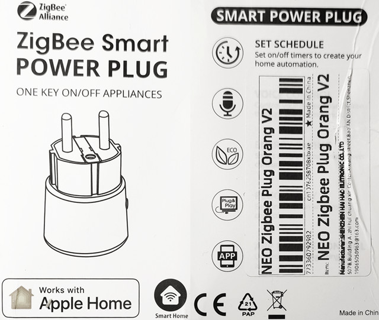
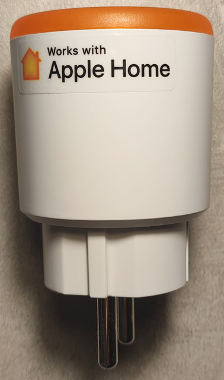
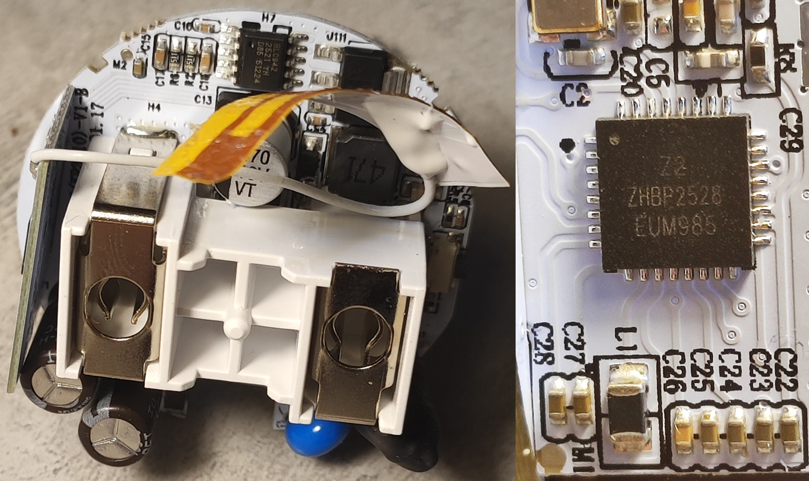

TS011F_TZ3210_w0qqde0g: Tuya ZigBee Switch with Power Monitor
Chip: Z2 (TLSR8258), Sensor: BL0942
(Отличие от
TS011F_TZ3000_gjnozsaz
в цвете крышки, чип имеет Flash на 1МБ, поддерживает Zigbee OTA)
The lid of the case is glued, but it can be easily opened by lifting the lid around the circumference with a sharp object.
Custom FirmWare



Relay
PC2 ("1" On)
Led
PB4 ("0" On)
Button
PB5 ("0" On)
BL0942 TX
PB7
BL0942 RX
PB1
Original FullFlash v1 TLSR8258(Z2) 1MB
Original FullFlash v2 TLSR8258(Z2) 1MB
1141-d3a3-00533001